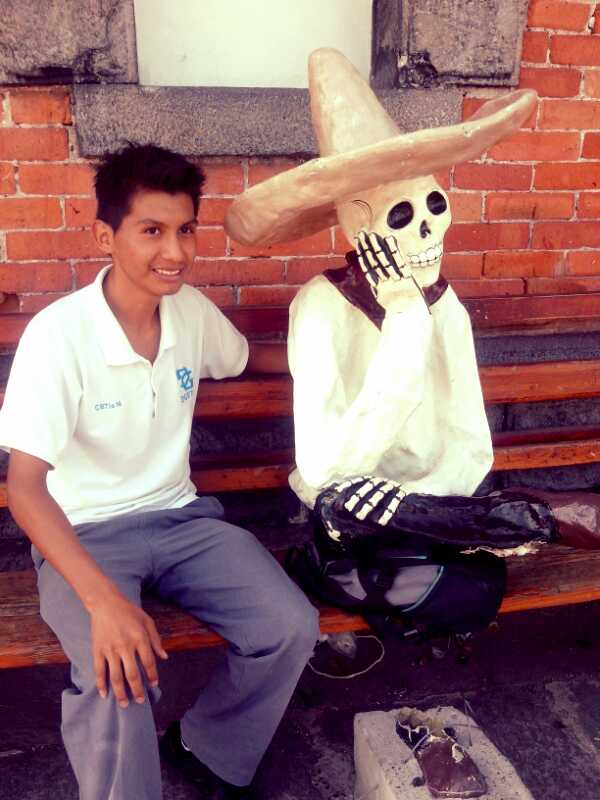

El Día de Muertos a nuestra manera de ver, se está haciendo cada vez más débil. Esto se debe, entre otras razones, a que nuestra sociedad es cada vez más influenciada por la americana. Los valores, las costumbres, las tradiciones y el folklore, se pierden cada vez más. La juventud se ve cada vez más desinteresada en seguir con esta tradición. El Halloween y los disfraces toman más y más fuerza cada vez. Aparentemente nuestras tradiciones son menospreciadas por la gente de hoy en día.
Viendo al Día de Muertos, creemos que es muy bonito tener una tradición tan única, tan simbólica y tan original. Muy pocos países en el mundo tienen tradiciones tan antiguas. Esperamos que esta y otras tradiciones cada vez cobren mayor fuerza y se difundan más allá de México.
Somos mortales porque estamos hechos de tiempo y de historia. Pero hay salidas instantáneas a través de la cultura, que es un acto poético, que disuelve el tiempo, para escapar de la historia y de la muerte.- Octavio Paz.

Día de Muertos